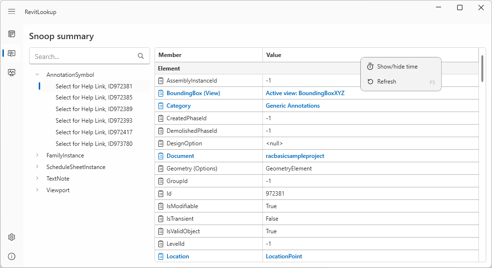
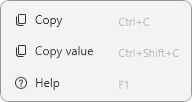
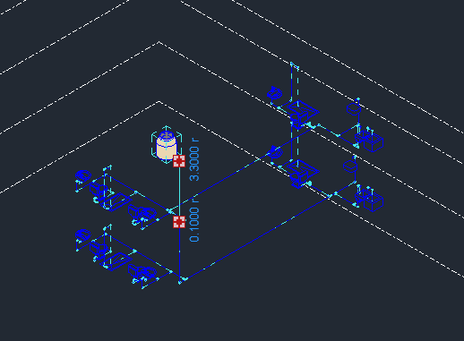
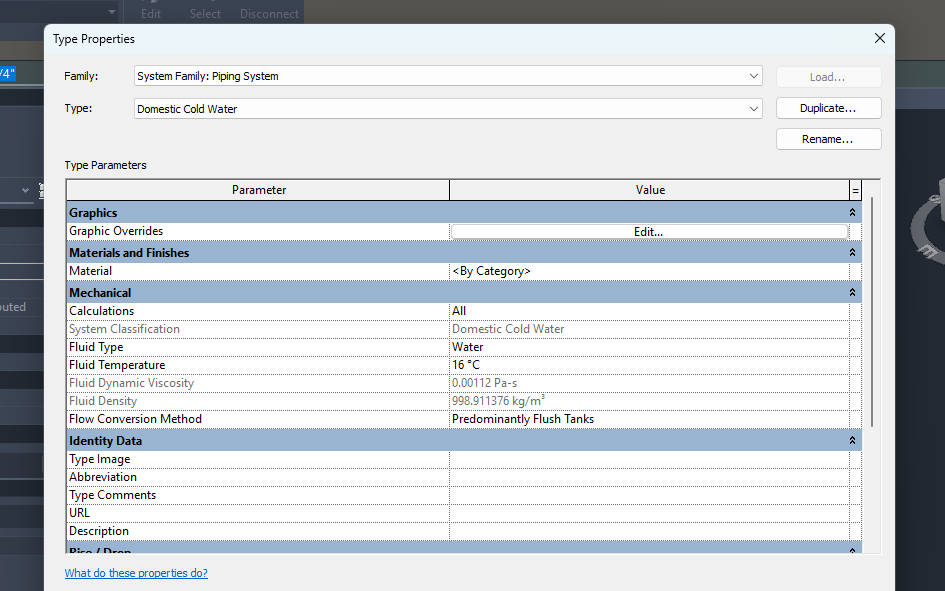
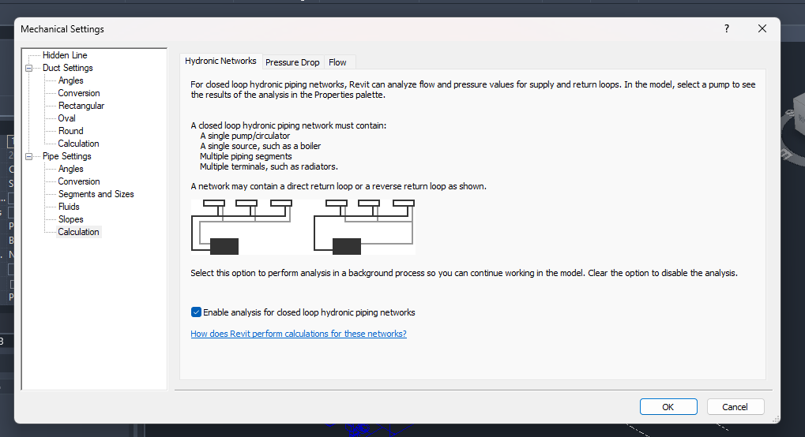
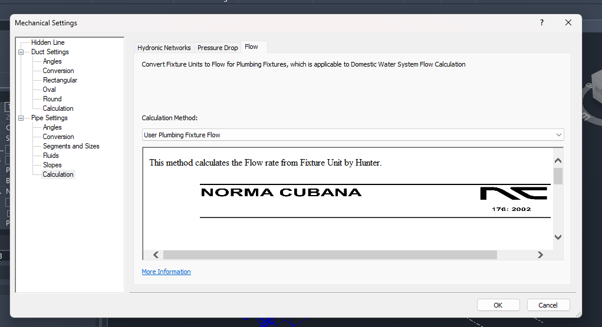

Lots of good news on APS and the Revit API to keep us busy for the weekend:
Registration for the Munich APS DevCon on September 11th and 12th is now open. Attendees can register for both San Francisco and Munich. Here is all information on how to:
Autodesk is also clarifying its vision of Forma for AEC and sustainability announced at AU 2022:
Cities consume more than two-thirds of the world’s energy and account for over 70% of global carbon emissions (source). This means architects, real estate developers, and urban planners have an exceptional opportunity to mitigate the environmental impact of our cities by designing buildings and communities with sustainable outcomes in mind.
Sustainable outcomes are best achieved through a proactive, data-driven approach that starts at the earliest stages of design before it becomes costly and difficult to make changes. Autodesk Forma’s powerful suite of real-time analyses equips design teams with the quick, visual insights needed to prioritize sustainability from day one of a project.
Take a quick look at the 3-minute video Autodesk Forma: Make tomorrow's cities:
Gui Talarico updated the online Revit API documentation for Revit 2024, both:
Notifications of new features are published on twitter at:
Very many thanks to Gui for his maintenance of these invaluable resources!
Another RevitLookup update is available, now for RevitLookup release 2024.0.8:
Computing time tracking

Context menu

Enhanced visualization
Reynaldo Lorente, Ingeniero Hidraulico of the Centro de Ingeneria e Investigaciones Quimicas in Cuba has been very helpful with several tricky MEP issues, e.g., on a User MEP Calculation error:
Question: Researching User MEP calculation, I encountered some errors:
Could someone with experience in this area please help? I'm new to this and would greatly appreciate your assistance.
Answer 1: Formatutils is an obsolete command that "Formats a number with units into a string based on the units formatting settings for a document."
You will have to find another way to do this.
Answer 2: I have updated
Hello, here I leave you UserMepCalculation for Revit 2024:
However, the Revit SDK 2024 also includes a new add-in named NetworkPressureLossReport that might also be useful for you:
This add-in sample shows how to access the MEP analytical model data and traverse the network. The flow and pressure loss results are exported to a csv file or displayed in Analysis Visualization Framework (AVF).
I hope it helps you, and good luck
Response: Thank you very much for sharing. It's helping me a lot.
Answer 3: While editing this blog post, I found three previous related articles:
I am in the process of editing this thread for a blog post. I found three existing related blog posts:
The third of these on Arnošt Löbel's class SD10752 on Revit External Services at Autodesk University 2015 is especially interesting:
It includes another Revit MEP calculation external service sample for a pressure drop calculation.
It was implemented specifically for this AU class and uses external commands to add and remove the calculator.
A proper calculator would be implemented as an ExternalDBApplication with no external commands involved.
Apparently, at the time, the Revit 2014 UserMepCalculation sample was superseded by this one and should be replaced.
However, I have not compared them myself, nor looked at the new SDK sample that Reynaldo points out.
Many thanks to Reynaldo for his very kind and competent support in this area!
Reynaldo also solved another MEP question on wastewater pipe calculation:
Question: I am researching plumbing calculations and discovered a method called "User MEP Calculation". However, it only deals with water supply calculations. I would greatly appreciate it if someone could suggest a method for wastewater pipe calculation.
Answer: The SRwD Sewage and Rainwater Drainage System add-in might help. Its last year of edition is 2023, but it might serve, at least a guide.
Response: I feel very grateful because you always provide me with valuable answers. You seem to be an expert in this field, while I am just a beginner.
Another question on water supply calculations because I am currently working on that:
When calculating the flow rate of a pipe, flow rate depends on the FlowConversionMode.
How can Revit understand whether the project is "predominantly flush valves" or "predominantly flush tanks"?
Answer: Here are some images that helped me formulate an answer:
Ejemplo de un sistema – example system




If you look at the tab areas, one of them turned yellow or orange. Click on that tab; another menu opens; in the properties table, click Edit Type again; a box opens (Type Properties); where it says Flow Conversion method, you can change it to Predominantly Flush Tanks (you can also do it in the System browser to get to the box (Type Properties). Remember that you have to change it in Mechanical Setting, in Pipe Settings, where you have the Flow tab, to add the Addin that you made or, alternatively, another one such as the UserMepCalculation 2024 that I sent you. You have to create a system first to execute these steps.
Response: I was able to do it because you provided me with an incredibly detailed guide. Thank you very much for dedicating your valuable time to me.
Answer: I am very glad that it has served you. One question, are you taking into account the height of the water intake of the Plumbing Fixtures or the pressure with which it arrives? The UserMepCalculation makes no assumptions in the calculations of the Plumbing system.
Thank you again, Reynaldo!
Let's close with The Password Game.
A little Friday frustration fun, in a geeky sort of way.
I made it to the whole "find a youtube video of X mins and Y seconds" one and gave up.
I got to 18, but I just can't from there....